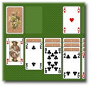
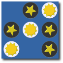
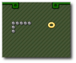

Gnome Games – Fun for your desktop
Gnome Games is a collection of games
for the GNOME desktop. There are sixteen games including card
games, puzzle games, and arcade games.
These games are designed to be simple but addictive – five
minute games for when you need a break. Regretfully we cannot be
held responsible for the resulting loss of productivity.
Aisleriot

A compilation of seventy different solitaire card games. Everything from favorites like Freecell and Klondike through to the hopelessly pointless Clock Patience.
Ataxx
A strategy game where you try and dominate
the board by replacing your opponents pieces with your
own. The evil twin of Iagno, which is also part of
Gnome Games.
Blackjack
The casino card game without any need to actually pay
your gambling debts.
Four-in-a-row
Place disks one at a time and try to form a row of four. Tic-tac-toe for those who like to think.
Gnometris
The Russian game of falling geometric
shapes. Need I say more ?
Iagno

The GNOME version of Reversi. The goal is to control the most disks on the
board.
Klotski
A series of sliding block puzzles. Try and solve them in the least number of moves.
Five or More
Move balls around the grid and try and form lines. Once you form five in a row, the line disappears. Unfortunately
more balls keep dropping in.
Mahjongg
A tile-based solitaire game with an oriental
flavor. Remove tiles in matching pairs to
dismantle elaborately designed stacks.
Mines
The popular logic puzzle minesweeper. Find mines on
a grid using hints from squares you have already
cleared.
Nibbles

Pilot a worm around a maze trying
to collect diamonds and at the same time avoiding the walls and yourself. With each diamond your worm grows longer
and navigation becomes more and more difficult. Playable by up to four people.
Robots
The classic robots game where you have to avoid a
hoard of robots who are trying to kill you. Each step you take brings them closer toward you. Fortunately they aren't very smart and you also have a helpful teleportation gadget.
Same GNOME
"I want to play that game! You know, they all go whirly-round and you click on them and they vanish!" - Telsa.
Tali
Sort of poker with dice and less money. An ancient
Roman game, this variant is similar to Yahtzee ®.
Tetravex

A puzzle game where you have to match a grid of tiles together. The skill level ranges from the simple two by two up to the seriously mind-bending six by six grid.